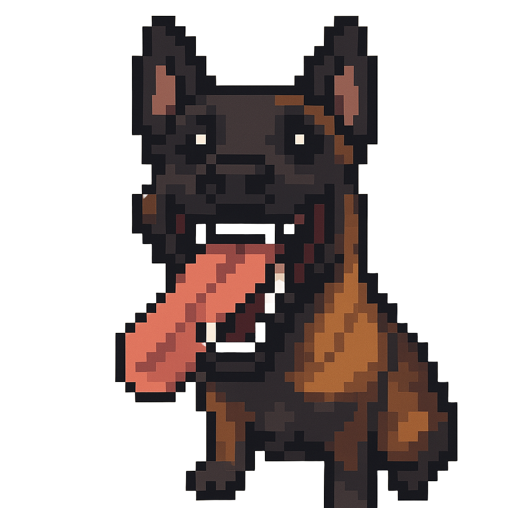
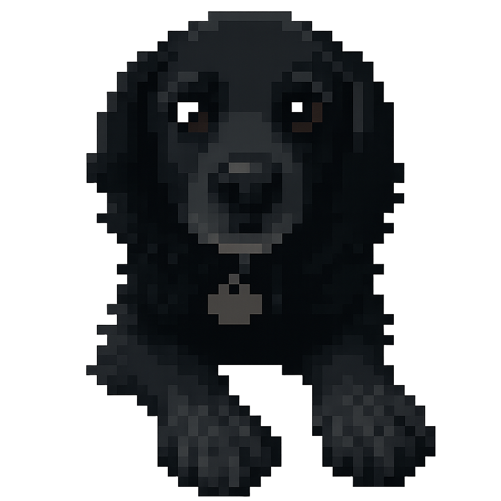

Simulation Archives
A collection of numerical experiments and earlier physics models (2025–2026).
← Return to Main Simulations
Analytical & Physics Models
My Own PDE Simulation
Earth and Moon Space Travel
Bifurcation Explorer
Fisher-KPP
Live Phase Portraits
Three-Body Simulation
The Chaotic (Double) Pendulum
Customizable Solar System Simulation
Black Hole Simulation
Predator-Prey Simulation
Early Explorations
Fourier Series Visualization
Turing Patterns
The Butterfly Effect (Lorenz System)
Huygen's Coupled Mechanical Clocks Simulation
Simple Pendulum with Phase Plane